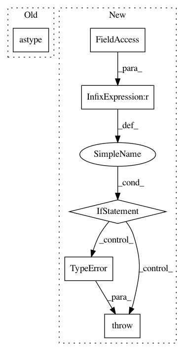

10a674a0d6fa608e1920313955b8aa09b48b0fa8,theano/gpuarray/blas.py,GpuGemm,make_node,#GpuGemm#Any#Any#Any#Any#Any#,161
Before Change
C = as_gpuarray_variable(C, ctx_name)
with theano.configparser.change_flags(warn_float64="ignore"):
alpha = as_tensor_variable(alpha).astype("float64")
beta = as_tensor_variable(beta).astype("float64")
assert alpha.ndim == 0
assert beta.ndim == 0
assert A.ndim == 2
assert B.ndim == 2
After Change
alpha = as_tensor_variable(alpha)
beta = as_tensor_variable(beta)
if not (A.dtype == B.dtype == C.dtype == alpha.dtype == beta.dtype):
raise TypeError(Gemm.E_mixed,
(A.dtype, B.dtype, C.dtype,
alpha.dtype, beta.dtype))
if not A.dtype.startswith("float"):
raise TypeError(Gemm.E_float, (A.dtype))
assert alpha.ndim == 0
assert beta.ndim == 0
assert A.ndim == 2
assert B.ndim == 2
assert C.ndim == 2
assert A.dtype == B.dtype == C.dtype
return Apply(self, [C, alpha, A, B, beta], [C.type()])
def perform(self, node, inputs, outputs):
C, alpha, A, B, beta = inputs
inplace = self.inplace
if inplace and not C.flags.forc:
inplace = False
outputs[0][0] = blas.gemm(alpha, A, B, beta, C,
overwrite_c=inplace)
def c_code(self, node, name, inp, out, sub):
vars = dict(out=out[0], C=inp[0], alpha=inp[1], A=inp[2], B=inp[3],
beta=inp[4], fail=sub["fail"], name=name)
if self.inplace:
code =
if (!GpuArray_ISONESEGMENT(&%(C)s->ga)) {
%(out)s = theano_try_copy(%(out)s, %(C)s);
if (%(out)s == NULL) {
%(fail)s
}
} else {
Py_XDECREF(%(out)s);
%(out)s = %(C)s;
Py_INCREF(%(out)s);
}
% vars
else:
code =
%(out)s = theano_try_copy(%(out)s, %(C)s);
if (%(out)s == NULL) {
%(fail)s
}
% vars
code +=
if (pygpu_blas_rgemm(cb_no_trans, cb_no_trans,
((dtype_%(alpha)s *)PyArray_DATA(%(alpha)s))[0],
%(A)s, %(B)s,
((dtype_%(beta)s *)PyArray_DATA(%(beta)s))[0],
%(out)s, 0) == -1) {
%(fail)s
}
% vars
if config.gpuarray.sync:
code +=
GpuArray_sync(&%(out)s->ga);
% vars
return code
def c_code_cache_version(self):
return (5,)
gpugemm_no_inplace = GpuGemm(inplace=False)
gpugemm_inplace = GpuGemm(inplace=True)
class GpuGer(BlasOp):
Ger on the GPU.
__props__ = ("inplace",)
def __init__(self, inplace=False):
self.inplace = inplace
if self.inplace:
self.destroy_map = {0: [0]}
def make_node(self, A, alpha, x, y):
ctx_name = infer_context_name(A, x, y)
A = as_gpuarray_variable(A, ctx_name)
x = as_gpuarray_variable(x, ctx_name)
y = as_gpuarray_variable(y, ctx_name)
alpha = as_tensor_variable(alpha)
if len(set([A.dtype, alpha.dtype, x.dtype, y.dtype])) != 1:
raise TypeError("ger requires matching dtypes",
(A.dtype, alpha.dtype, x.dtype, y.dtype))
assert alpha.ndim == 0
assert A.ndim == 2
assert x.ndim == 1
assert y.ndim == 1
assert A.dtype == x.dtype == y.dtype
return Apply(self, [A, alpha, x, y], [A.type()])
def perform(self, node, inp, out):
A, alpha, x, y = inp
inplace = self.inplace
if inplace and not A.flags.forc:
inplace = False
out[0][0] = blas.ger(alpha, x, y, A,
overwrite_a=inplace)
def c_code(self, node, name, inp, out, sub):
vars = dict(out=out[0], A=inp[0], alpha=inp[1], x=inp[2], y=inp[3],
fail=sub["fail"], name=name)
if self.inplace:
code =
if (!GpuArray_ISONESEGMENT(&%(A)s->ga)) {
%(out)s = theano_try_copy(%(out)s, %(A)s);
if (%(out)s == NULL) {
%(fail)s
}
} else {
Py_XDECREF(%(out)s);
%(out)s = %(A)s;
Py_INCREF(%(out)s);
}
% vars
else:
code =
%(out)s = theano_try_copy(%(out)s, %(A)s);
if (%(out)s == NULL) {
%(fail)s
}
% vars
code +=
if (pygpu_blas_rger(((dtype_%(alpha)s *)PyArray_DATA(%(alpha)s))[0],
%(x)s, %(y)s, %(out)s, 0) == -1) {
%(fail)s
}
% vars
if config.gpuarray.sync:
code +=
GpuArray_sync(&%(out)s->ga);
% vars
return code
def c_code_cache_version(self):
return (3,)
gpuger_no_inplace = GpuGer(inplace=False)
gpuger_inplace = GpuGer(inplace=True)
class GpuDot22(BlasOp):
Dot22 on the GPU.
_f16_ok = True
__props__ = ()
def make_node(self, x, y):
ctx_name = infer_context_name(x, y)
x = as_gpuarray_variable(x, ctx_name)
y = as_gpuarray_variable(y, ctx_name)
assert x.ndim == 2
assert y.ndim == 2
assert x.dtype == y.dtype
otype = x.type.clone(
broadcastable=(x.type.broadcastable[0], y.type.broadcastable[1]))
return Apply(self, [x, y], [otype()])
def perform(self, node, inputs, outputs):
In pattern: SUPERPATTERN
Frequency: 3
Non-data size: 6
Instances
Project Name: Theano/Theano
Commit Name: 10a674a0d6fa608e1920313955b8aa09b48b0fa8
Time: 2017-03-28
Author: nouiz@nouiz.org
File Name: theano/gpuarray/blas.py
Class Name: GpuGemm
Method Name: make_node
Project Name: scikit-image/scikit-image
Commit Name: 0bf6d2940a46cd414be5d738232e49602fb90826
Time: 2018-05-22
Author: lagru@mailbox.org
File Name: skimage/morphology/extrema.py
Class Name:
Method Name: local_maxima
Project Name: scipy/scipy
Commit Name: 4082e490922171edc86cc8f59a7f380a2e4c2f23
Time: 2020-05-13
Author: peter.mahler.larsen@gmail.com
File Name: scipy/spatial/_spherical_voronoi.py
Class Name: SphericalVoronoi
Method Name: __init__